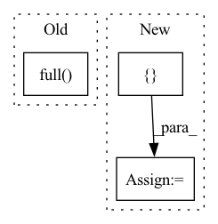

Pattern ID :14876
Before Change
user_df = self.user_df[self.pr:self.pr + self.step]
uid_list = list(user_df[self.dataset.uid_field])
pos_len_list = self.uid2items_num[uid_list]
user_len_list = np.full( len(uid_list), self.dataset.item_num)
user_df.set_additional_info(pos_len_list, user_len_list)
history_item = self.uid2history_item[uid_list]
history_row = torch.cat([torch.full_like(hist_iid, i) for i, hist_iid in enumerate(history_item)])After Change
history_row = torch.cat([torch.full_like(hist_iid, i) for i, hist_iid in enumerate(history_item)])
history_col = torch.cat(list(history_item))
positive_u = []
positive_i = []
for idx, uid in enumerate(uid_list):
uid = uid.item()
positive_u += [idx for i in range(self.uid2items_num[uid])]
positive_i += list(self.uid2positive_item[uid])
positive_u = torch.from_numpy(np.array(positive_u))In pattern: SUPERPATTERN
Frequency: 3
Non-data size: 3
Instances Fragment ID: 49439015
Project Name: rucaibox/recbole
Commit Name: a3596a230c1b34f77b50d21460d63996206cd55a
Time: 2021-07-15
Author: 2017202006@ruc.edu.cn
File Name: recbole/data/dataloader/general_dataloader.py
M Class Name: FullSortEvalDataLoader
N Class Name: FullSortEvalDataLoader
M Method Name: _next_batch_data(1)
N Method Name: _next_batch_data(1)
M Parent Class: AbstractDataLoader
N Parent Class: AbstractDataLoader
M File Name: recbole/data/dataloader/general_dataloader.py
N File Name: recbole/data/dataloader/general_dataloader.py
M Start Line: 225
M End Line: 256
N Start Line: 232
N End Line: 256
Before Change
mask_cond = paddle.arange(mask.shape[-1])
mask_cond = mask_cond < (mask_cond + 1).reshape([mask.shape[-1], 1])
mask = paddle.where(mask_cond, paddle.full( mask_cond.shape, 0) , mask)
if past_key_values_length > 0:
mask[:, :past_key_values_length] = FalseAfter Change
mask = masked_fill(mask, mask_cond < (mask_cond + 1).reshape([mask.shape[-1], 1]), 0)
if past_key_values_length > 0:
mask = paddle.concat([ paddle.zeros(target_length, past_key_values_length), mask Fragment ID: 49439006
Project Name: paddlepaddle/paddlenlp
Commit Name: 5f01f073ed6e140743170652b201c16356350dc7
Time: 2023-04-13
Author: 40840292+linjieccc@users.noreply.github.com
File Name: paddlenlp/transformers/llama/modeling.py
M Class Name: AnonimousClass
N Class Name: AnonimousClass
M Method Name: _make_causal_mask(3)
N Method Name: _make_causal_mask(3)
M Parent Class:
N Parent Class:
M File Name: paddlenlp/transformers/llama/modeling.py
N File Name: paddlenlp/transformers/llama/modeling.py
M Start Line: 96
M End Line: 106
N Start Line: 101
N End Line: 109
Before Change
self.assertTrue(
torch.equal(
total_rew[dones].sum(-1).to(torch.long),
torch.full( (dones.sum(),), n_agents) ,
)
)
total_rew[dones] = 0After Change
angular_v_rad_per_step = 1 / 15
agent_dist_to_target = 0.5
angle = self.env.steps * angular_v_rad_per_step + agent_phase_shift
desired_pos = (
torch.stack([ torch.cos(angle), torch.sin(angle) Fragment ID: 49439022
Project Name: proroklab/vectorizedmultiagentsimulator
Commit Name: 92c9eee35eb9bce74fd3046ea1168aa2cbdcf77a
Time: 2022-07-05
Author: jb2270@cam.ac.uk
File Name: tests/test_scenarios/test_flocking.py
M Class Name: TestDispersion
N Class Name: TestDispersion
M Method Name: test_heuristic(1)
N Method Name: test_heuristic(1)
M Parent Class: unittest.TestCase
N Parent Class: unittest.TestCase
M File Name: tests/test_scenarios/test_flocking.py
N File Name: tests/test_scenarios/test_flocking.py
M Start Line: 29
M End Line: 53
N Start Line: 30
N End Line: 61